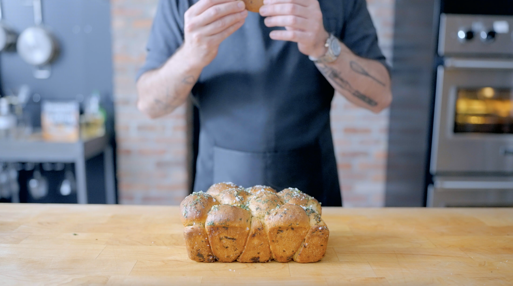

Herb & Garlic Monkey Bread

For this recipe, I went with something that I'd like to actually make soon.
Here we have a recipe for monkey bread from my main man Babish. This man has helped me immensely in my
culinary endevours, and to pay him back I am ripping off his monkey bread recipe for my shitty website XD...
I'd like to think Babish would understand it's for educational purposes.
Anyway.. his video and recipe made a few variations of monkey bread, you should definitely
check that out if you're interested, however,
I am just going with the herb & garlic variation.
Ingredients
- 500 g bread flour
- 7 g instant dry yeast
- 50 g granulated sugar
- 100 g whole milk, warm (~85 °F)
- 200 g water, warm (~85 °F)
- 10 g kosher salt
- 85 g unsalted butter, cubed + very soft (~75-80 °F)
- As needed cooking olive oil or non-stick spray
- Melted unsalted butter
- Parsely, chopped
- Chives, chopped
- Dill, chopped
- Garlic, minced
- Kosher salt
- Freshly ground black pepper
Directions
-
Combine the flour, yeast, and sugar in the bowl of a stand mixer.
-
Evenly combine the dry ingredients using a whisk or fork.
-
Add the milk, water, and salt to the bowl. With the mixer fitted with a dough hook attachment,
combine the dough on medium-low speed until almost homogeneous.
-
Begin adding the butter, one cube at a time, and waiting until each cube is incorporated
before adding another one until all of the butter has been added.
-
Increase the speed to medium-high and mix until the dough is smooth, elastic,
and clears the sides of the bowl, about 4-5 minutes.
-
Transfer the dough to a large greased bowl and cover it with plastic wrap.
-
Let the dough proof until about doubled in size, about 1-2 hours depending on the warmth of the room.
-
Meanwhile, grease 1 large tube or bundt pan or loaf pan or muffin tin generously with non-stick spray.
-
Remove the dough from the bowl and place it on a lightly oiled work surface.
Divide and shape the dough into even golf-ball-sized portions.
If using a muffin tin, make portions half the size.
-
Roll the dough balls in a mixture of the melted butter, fresh herbs (of your choice),
salt, and pepper. Place them into the prepared baking pan(s).
-
Loosely cover the pan(s), and allow the dough to proof for another 45 minutes - 1 hour, until puffed.
-
Meanwhile, preheat the oven to 350 °F.
-
Once risen, remove the plastic wrap from the pan(s).
-
Bake the monkey bread for 30-35 minutes, turning halfway through,
until the dough is cooked through (200-205 °F) and golden brown on top.
-
Allow the bread to cool for 10 minutes, then flip it onto a serving platter of your choice.
Brush the dough with any remaining herb butter. Serve warm.